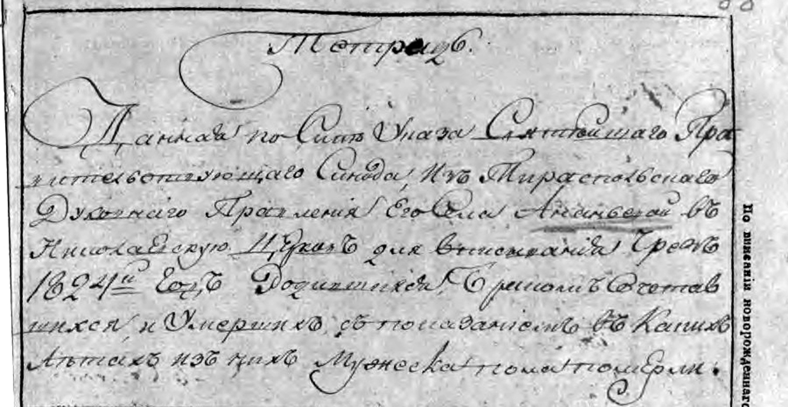
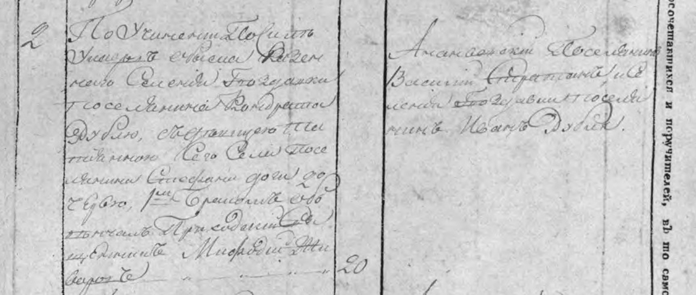
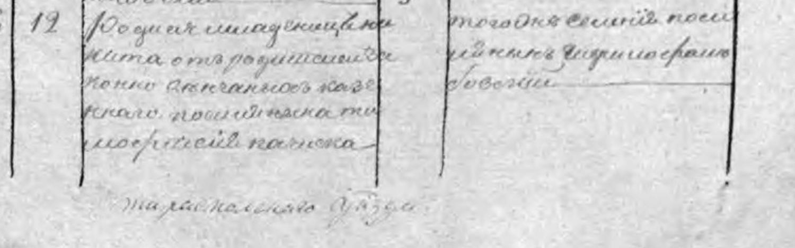
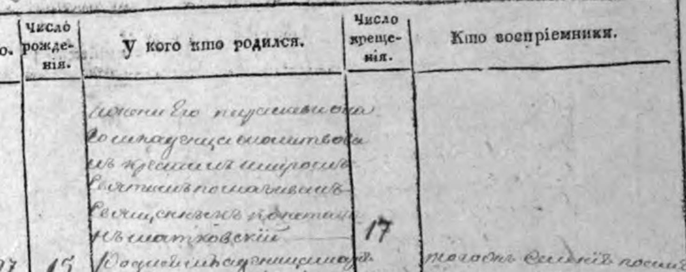

20 січня / 1 лютого 1824 — книга Миколаївської церкви Ананьєва. Кондрат названий поселянином Гвоздавки; наречена — Тетяна, дочка Стефана Доги.
Дату шлюбу Claude прочитав правильно. Виправлено назву парафіяльної книги та місце шлюбу в дереві. Нових батьків чи іншого недоведеного споріднення не додано.


Микита — син Тимофія Пачисного та Параскеви.
Гвоздавка · перевірено 17.11.2026
Народився 12 / 24 серпня 1824; охрещений 17 / 29 серпня. Перша дата — за старим стилем, друга — за новим.
У Claude вже була згадка цієї дитини з роком 1824. Тут додано точні дати та архівні скани. Спорідненість із доведеною гілкою Пачесних поки не встановлена.


ДОДАТКОВА ЗНАХІДКА 17.11.2026: ШЛЮБ КОНДРАТА РУБЛІ ЗАПИСАНИЙ В АНАНЬЇВСЬКІЙ КНИЗІ Після публікації попереднього звіту (коміт 46a185c894d3891812d65917257336de0086636e) вдалося розв'язати розбіжність у місці запису шлюбу Кондрата Рублі й Тетяни Доги. ВСТАНОВЛЕНО ЗА ПОВНИМ СКАНОМ ДАОО 37/3/281, арк. 106 (олівцева нумерація; старе чорнильне число 123), шлюб № 2. DjVu 109 праворуч посередині. Дата: 20 січня 1824 ст. ст. / 1 лютого 1824 н. ст. Заголовок парафіяльної книги: «Села Ананьева въ Николаевскую Церковь … 1824…». ДАОО 37/3/281, арк. 88, DjVu 91 праворуч. Отже, джерело — книга Миколаївської церкви Ананьєва. Раніше на сайті його помилково названо книгою Гвоздавки. Це той самий запис, який Claude показав у кадрованому зображенні shliub-rublia-doga-1824.jpg: текст, число 20, № 2 і закреслення прізвища свідка збігаються. Його посилання FamilySearch: https://www.familysearch.org/ark:/61903/3:1:3Q9M-CSK4-PWYY-6 ; зазначений на сайті DGS 103559378, зображення 111. Відповідний кадр офіційного DjVu — 109, не 111. Офіційний файл: https://archive.od.gov.ua/wp-content/old-files/EL_ARH/M/0037/0037_03/0201-0300/0037_03_0281_DAOO.djvu ЩО САМЕ ГОВОРИТЬ ЗАПИС Наречений — поселянин казенного селища Гвоздавки Кондрат; наречена — дівиця Тетяна, дочка поселянина Стефана Доги. У тексті про батька нареченої використано «сего села». Це не встановлює місця народження жодного з подружжя. Збережено попередню обережність щодо першої літери прізвища нареченого: Рублю/Дублю; тотожність із відомою парою Рублів підтримана наведеними Claude метриками їхніх дітей, а не новим прочитанням неясної літери. У записі вказаний перший шлюб. Імен батьків Кондрата, віку подружжя та матері Тетяни тут немає. Належність запису до ананьївської парафії встановлена. Точне місце проведення обряду поза назвою парафії окремо не описане. У дереві місце шлюбу уточнено як Ананьїв (Миколаївська парафія), а Гвоздавку збережено як місце, з яким документ пов'язує нареченого. Поручитель Василь названий ананьївським поселянином; другий — гвоздавським. Поручительство саме по собі не доводить спорідненості. ЧОМУ ЦЕ ЗМІНЮЄ ПОШУК Відсутність цього шлюбу в Михайлівській книзі Гвоздавки пояснена іншою парафією. Це не помилка дати 1824 року. Наступний обґрунтований напрям — діти та родинні згадки Рублів і Дог в ананьївській Миколаївській парафії, зі звіренням батьків та місць проживання. Згадану Claude Тетяну, дочку Стефана Доги, у метриці Ананьєва 1801 року не ототожнювати автоматично з нареченою лише за іменами. Повного поіменного перегляду всіх народжень, шлюбів і смертей Ананьєва за 1824 у цій перевірці не зроблено: знайдено точний запис і заголовок його книги. Перегляд Гвоздавки, описаний нижче, залишається окремим обсягом роботи. Файли: research-ananyiv-1824-title.jpg — повний заголовок; research-ananyiv-1824-title-detail.jpg — збільшення; research-ananyiv-1824-rublia-page.jpg — повний розворот зі шлюбом; research-ananyiv-1824-rublia-detail.jpg — весь запис № 2. --- ПОПЕРЕДНЯ ПЕРЕВІРКА НАРОДЖЕНЬ ГВОЗДАВКИ --- ГВОЗДАВКА 1823–1824: ДОПОВНЕНИЙ ПЕРЕГЛЯД НАРОДЖЕНЬ Дата перевірки: 17.11.2026. Порівняно з опублікованими текстовими файлами репозиторію, коміт 0341263d1abc53ea76f4087748e99797f08fdde6. 1. МИКИТА (В ОРИГІНАЛІ «НИКИТА»), СИН ТИМОФІЯ ПАЧИСНОГО ТА ПАРАСКЕВИ Народження: 12 серпня 1824 ст. ст. / 24 серпня 1824 н. ст. Хрещення: 17 серпня 1824 ст. ст. / 29 серпня 1824 н. ст. Батько: Тимофій, прізвище в родовому відмінку читається «пачисна»; нормалізовано за вже відомою групою як Пачисний. Мати: Параскева. Батьки названі законно вінчаними; батько — казенний поселянин. Парафія: Михайлівська церква Гвоздавки. Окремого поля з місцем народження дитини немає; місце народження батьків не встановлюється. Джерело: ДАОО, ф. 37, оп. 3, спр. 281, арк. 576–576 зв. (олівцева нумерація), запис про народження № 26. Старе чорнильне число на першій сторінці — 625. Офіційний файл: https://archive.od.gov.ua/wp-content/old-files/EL_ARH/M/0037/0037_03/0201-0300/0037_03_0281_DAOO.djvu Зображення DjVu 594: праворуч унизу — початок № 26, число народження 12, ім'я Никита та ім'я батька. Місяць «Августъ» над № 24 на цій самій сторінці. Зображення DjVu 595: ліворуч угорі — продовження № 26, ім'я матері, число хрещення 17; далі починається № 27. Зображення DjVu 591 праворуч: заголовок, який встановлює село, церкву та 1824 рік. Номери зображень тут від 1 у файлі ДАОО, не номери кадрів FamilySearch. Читання ключової частини, без збереження перенесень: «Родился младенецъ Никита отъ родителей законно венчанныхъ казеннаго поселянина тимофея пачисна»; продовження: «и жены его параскевы». Повної транскрипції запису не зроблено. Прізвище хрещеного недостатньо впевнено прочитане, до встановлених даних його не включено. По батькові Тимофія та дівочого прізвища Параскеви в цій частині запису немає. НОВИЗНА ТА МЕЖІ ВИСНОВКУ Цю дитину Claude уже згадував із 1824 роком, поруч з Іоанном 1813 і Ларіоном 1815. Нове доповнення — точні дати народження й хрещення за двома календарями та перевірена архівна копія. Це НЕ новознайдений предок. Прямий зв'язок цієї родини з доведеною лінією Архипа → Андрія Архиповича Пачесного не встановлений. Запис не дозволяє назвати Тимофія братом чи батьком Архипа. Не додавати таке споріднення до дерева. 2. ЩО ПЕРЕГЛЯНУТО, ЩОБ НЕ ДУБЛЮВАТИ ПОШУК 1823, ДАОО 37/3/269: народження на DjVu 643 праворуч — 649 ліворуч, 46 записів. 17.11 дочитано раніше не перевірені 644–648; 643 і 649 повторно звірено. Заголовок — 643, підсумок книги — 655. Файл 1823: https://archive.od.gov.ua/wp-content/old-files/EL_ARH/M/0037/0037_03/0201-0300/0037_03_0269_DAOO.djvu 1824, ДАОО 37/3/281: народження на DjVu 591 праворуч — 597 ліворуч, 42 записи. 17.11 дочитано 592–595; 591, 596–597 звірено повторно. Підсумок книги — 601 праворуч: 16 хлопців, 26 дівчат. Разом це перегляд 88 записів, не повна поіменна транскрипція. Нових упевнено ідентифікованих дітей потрібних пар Рублів або Лазаря Дадула в цій копії не встановлено. Негативний результат не виключає іншого написання, іншої парафії, копії чи року. Шлюби й смерті цих двох років уже переглядалися 15.11; поточний звіт не подає їх повторний перегляд як нову роботу. 3. СУМНІВНІ ЧИТАННЯ — НЕ ДОДАВАТИ ДО РОДОВОДУ 1824, народження № 5, DjVu 592: ім'я батька схоже на Лазар, але прізвище при збільшенні не підтверджує Дадул; можливе читання Диденкул. Мати схожа на Тетяну. Це НЕ встановлена дитина Лазаря Дадула. 1823, № 43, DjVu 648: прізвище батька Василя недостатньо чітке; Болокан не підтверджено. До цієї гілки не приєднувати. 4. НАСТУПНА КОНКРЕТНА ПЕРЕВІРКА Шукати запис, який називає по батькові Тимофія Пачисного, або запис про Архипа з іменами батьків. Прізвище й спільна парафія самі по собі не з'єднують ці родини. Розбіжність щодо джерела шлюбу Кондрата Рублі й Тетяни Доги розв’язана після цієї перевірки: запис належить Миколаївській парафії Ананьєва. Докладні докази наведено на початку звіту.